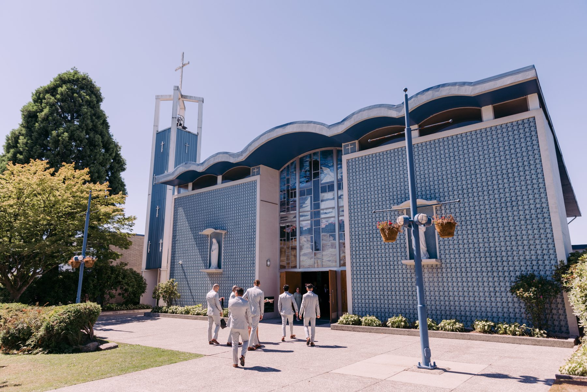
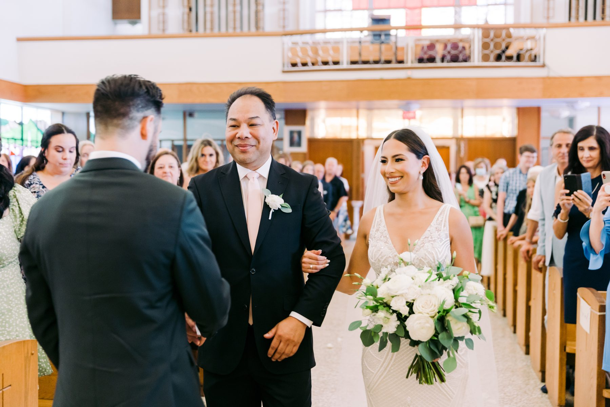
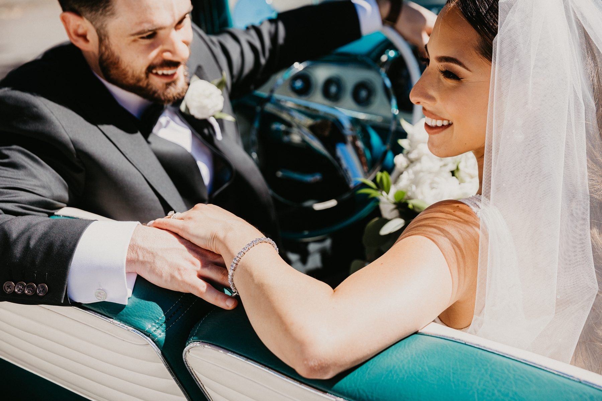
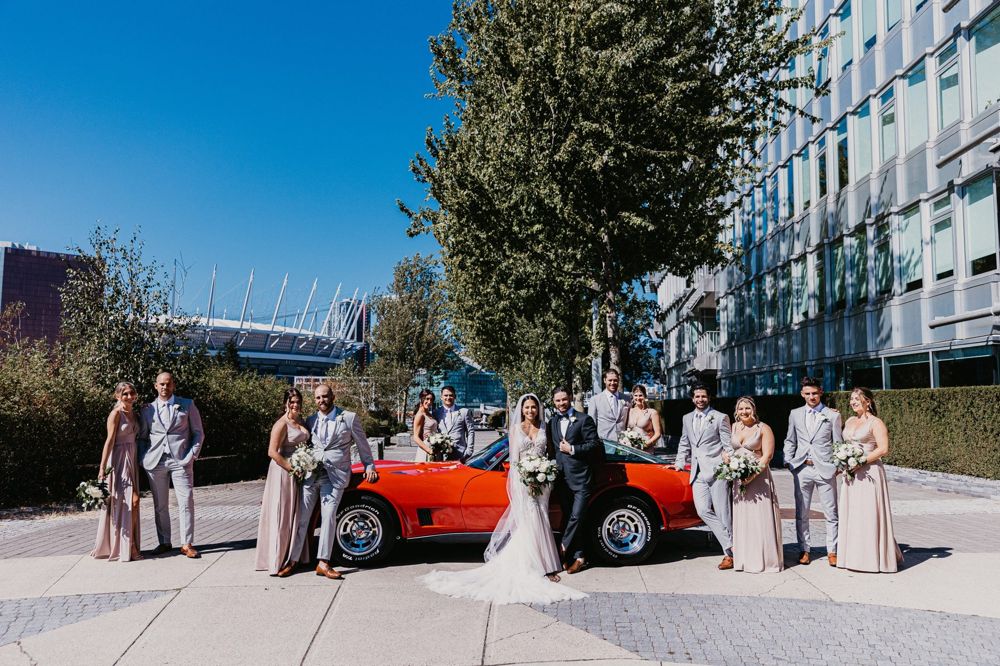
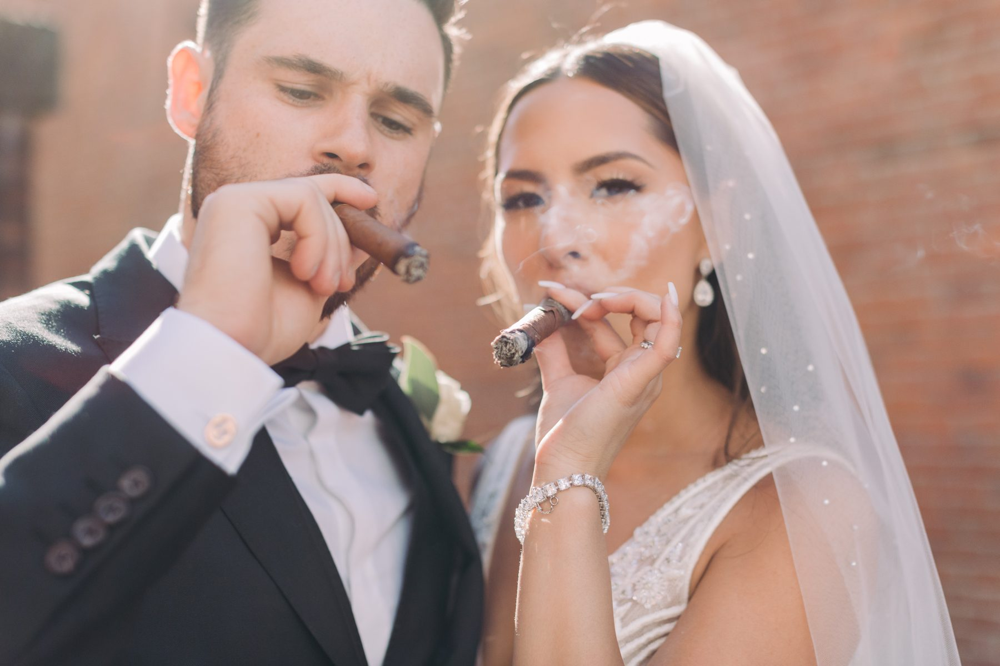
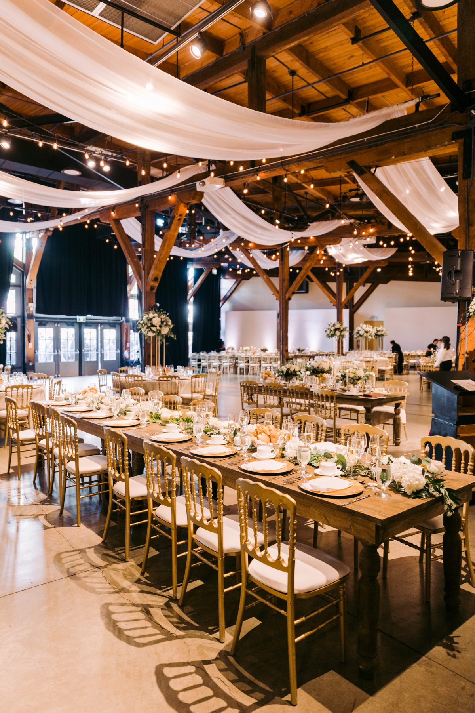
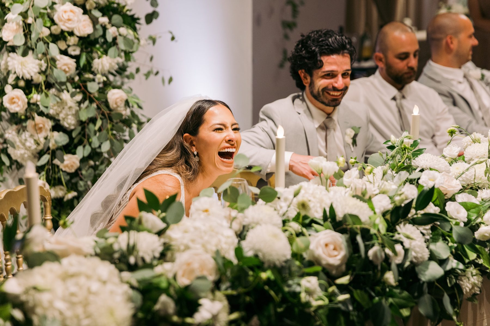
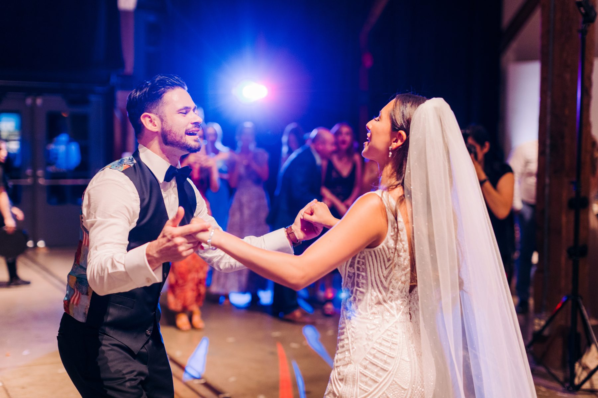

Lauren and Nicholas posed next to a steam locomotive in their wedding clothes. Nobody told them to. They saw it, looked at each other, and walked over.
That is the kind of couple they were, and it is why their wedding is one of the most fun galleries we have.
The ceremony was in a mid century church with a wall of pale blue glass tile and a bell tower on one end. It is an unusual building. Clean lines, soft curves along the roof, and more light inside than most churches manage.

Bride and father came down the aisle together, Lauren holding a loose bouquet of white roses and greenery. Her dad had that look dads get. Proud, slightly wobbly, determined not to cry yet.

If your ceremony is in a church with a balcony, tell your photographer. A second floor gives you a whole other angle on the aisle, and some churches limit where we can stand up there.
Lauren and Nicholas arrived in a vintage turquoise convertible with chrome and a steering wheel the size of a dinner plate. Later the whole wedding party posed around an orange classic sports car under a blue August sky.

Cars are underrated. A single classic car gives you a prop, a colour, and a reason for the couple to be close and relaxed. And you do not have to rent a limousine to do it. A friend with a convertible, a cousin with a vintage truck, any of them works.

The venue for the reception was the Roundhouse in Yaletown, a heritage railway turntable building with a restored steam locomotive on display. Engine 374 sits behind glass, black and enormous, with a polished number plate.
We took the couple there for a few frames. They looked at the engine, then at each other, then they grinned and stood in front of it.
A great location for portraits is rarely a pretty one. It is a place with some story attached. The locomotive had nothing to do with Lauren and Nicholas and everything to do with where they were that day, and that is why the photo works.
Lauren and Nicholas lit up cigars for the cocktail hour. She wore her veil over one shoulder with a cigar in her hand. He wore a bow tie and a smirk.

I will say this about being yourselves at your own wedding. The photos always show it. If you smoke cigars on a normal Saturday, smoke one on this one. If you like a drink, set up a good bar. People can tell when a couple is performing a wedding and when they are living one.
The Roundhouse Exhibition Hall is big and warm. Heavy timber beams, white fabric draped across the ceiling, long wooden tables lined with gold chairs. It looks like a barn that went to a very good school.

One thing to know about big industrial venues. They can feel cavernous if you do not dress them. Lauren and Nicholas filled the space with a floral wall behind the head table, tall arrangements, candles, and warm lighting. It never felt empty for a minute.
Dinner included a wedding sign that read, in handwritten gold, that the open bar would be heavily photographed and any drunken shenanigans would be mocked for years to come. We delivered. There were donuts too, stacked on a tiered stand.

Then the dance floor took over. Strobe lights, blue wash, the bride in her veil spinning her new husband around. A flower girl dancing with total conviction. A mother and son holding on for a long time.

Choose a venue with a story, then let the story show up in your photos. Add one vintage car. Put a funny sign by the bar. Dress a big room with warm light and flowers instead of fighting its size. And let your guests dance.
Lauren and Nicholas did not follow a template. They did something better. They turned their wedding into a good night out for everyone they love.
SimplyWed Studio is a Vancouver wedding and elopement photography studio. Send us your date through the contact page and we will walk through the venue light with you. Not sure how long you need us? Read how many hours of wedding photography you actually need.
← Back to the journal